Search variation.com
Site Map
CAPAs and Trending of Quality Data
Spec Setting, Tolerance Analysis and Robust Design
What's New
Technical Library
FAQ
Contact Info
- Chairman
- Dr. Wayne A. Taylor
- President
- Ann B. Taylor
- Telephone
- 1 (847) 367-1032
- FAX
- 1 (847) 367-1037
- Postal address
- 5510 Fairmont Rd.
Libertyville, IL 60048
USA - Electronic mail
- info@variation.com
- Web
- www.variation.com
Subscribe to our Web Site
By entering your e-mail address and clicking the Subscribe button, you will automatically be added to our mailing list. You will receive an e-mail when new versions of our software or books are available as well as other significant announcements. (privacy policy).
Change-Point Analysis:
A Powerful New Tool For Detecting Changes
Change-point analysis is a powerful new tool for determining whether a change has taken place. It is capable of detecting subtle changes missed by control charts. Further, it better characterizes the changes detected by providing confidence levels and confidence intervals. When collecting online data, a change-point analysis is not a replacement for control charting. But, because a change-point analysis can provide further information, the two methods can be used in a complementary fashion. When analyzing historical data, especially when dealing with large data sets, change-point analysis is preferable to control charting. A change-point analysis is more powerful, better characterizes the changes, controls the overall error rate, is robust to outliers, is more flexible and is simpler to use. This article describes how to perform a change-point analysis and demonstrates its capabilities through a number of examples.
Table of Contents
Introduction
Example 1: US Trade Deficit Data
Change-Point Analysis
Procedure for Performing a Change-Point
Analysis
Detecting Changes
in the Variation and Other Characteristics
Handling Outliers
Example 2: Complaint Data
Example 3: Part Strength
Conclusion
References
Did a change occur? Did more than one change occur? When did the changes occur? With what confidence did the changes occur? All these questions and more can be answered by performing a change-point analysis. A change-point analysis is capable of detecting multiple changes. For each change it provides detailed information including a confidence level indicating the likelihood that a change occurred and a confidence interval indicating when the change occurred. The change-point analysis procedure provided is extremely flexible. It can be performed on all types of time ordered data including attribute data, data from nonnormal distributions, ill-behaved data such as particle counts and complaint data, and data with outliers. This article describes how to perform a change-point analysis and highlights its potential applications through a number of examples.
Traditionally, control charts are used to detect changes. The major difference between change-point analysis and control charting is that control charts can be updated following the collection of each data point while a change-point analysis can only be performed once all the data is collected. Control charts are generally better at detecting isolated abnormal points and at detecting a major change quickly while a change-point analysis can detect subtle changes frequently missed by control charts. The two methods can be used in a complementary fashion.
When analyzing historical data, especially when such data sets are large, a change-point analysis is preferable to control charting the data. One benefit of a change-point analysis is that it controls the change-wise error rate. As a result, each change detected is likely to be real. Control charts control the point-wise error rate. When there are thousands of data points, numerous points can exceed the control limits even when no change has occurred. Change-point analysis offers many other benefits as well. This article also compares and contrasts these two methods of detecting change.
Example 1: US Trade Deficit Data
Before providing the details on how to perform a change-point analysis, we will start with an example. Table 1 shows US trade deficit data from 1987 to 1988 in billions of dollars. This data is from Wheeler (1993).
Table 1: US Trade Deficits 1987-1988 ($ billions)
|
|
Jan |
Feb |
Mar |
Apr |
May |
Jun |
Jul |
Aug |
Sep |
Oct |
Nov |
Dec |
|
1987 |
10.7 |
13.0 |
11.4 |
11.5 |
12.5 |
14.1 |
14.8 |
14.1 |
12.6 |
16.0 |
11.7 |
10.6 |
|
1988 |
10.0 |
11.4 |
7.9 |
9.5 |
8.0 |
11.8 |
10.5 |
11.2 |
9.2 |
10.1 |
10.4 |
10.5 |
A plot of this data is shown in Figure 1. Take a moment and determine what patterns you detect in the plot. Did the trade deficit change during this period of time? How did it change? When did it change?
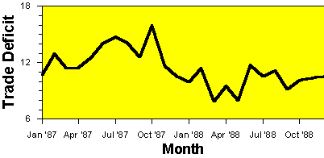
Figure 1: Plot of US Trade Deficit Data
The trade deficit appears to be lower in 1988 than in 1987. To confirm that this is the case, a control chart of the data can be constructed. The correct type of control chart to use for this data is an individuals control chart. An individuals control chart of the trade deficit data is shown in Figure 2. The two lines added to the individuals chart are called control limits. They represent the maximum range that the values are expected to vary over assuming no change has occurred. Points outside the control limits indicate a change has occurred. The fact that the October 1987 point is above the upper control limit indicates that a change has occurred.
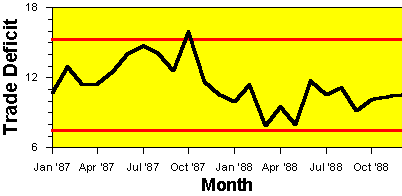
Figure 2: Individuals Control Chart of US Trade Deficit Data
But what type of change occurred? Look at Figure 2 and decide how you would describe the change. Was October 1987 an abnormally high month? Did the trade deficit gradually decrease during this two-year period? Or did the trade deficit suddenly shift downward at the end of 1987 or beginning of 1988? While control charts can be used to detect changes, interpreting these changes can still be difficult. To shed further light on the nature of the change, a change-point analysis can be performed.
There are numerous approaches to performing a change-point analysis. The one used in this paper has been implemented in Taylor (2000a). This software was used to perform the analyses in this paper. The details of this procedure are provided later. First we will look at the results of performing this analysis. Table 2 shows the results of a change-point analysis for the trade deficit data in Table 1.
Table 2: Results of Change-Point Analysis on US Trade Deficit Data
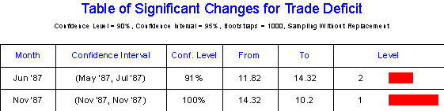
The analysis detects two changes. The first change is estimated to have occurred around June 1987. This date represents the first month following the change. The second change is estimated to have occurred around November 1987. Associated with each change is a confidence level indicating how confident the analysis is that the change actually occurred. The first change occurred with 91% confidence. The second change occurred with 100% confidence. We are much more confident about the second change.
Also associated with each change is a confidence interval for the time of the change indicating how well the time of the change has been pinpointed. 95% confidence is used for all confidence intervals. With 95% confidence, the first change occurred between May and July of 1987. With 95% confidence, the second change occurred in November 1987. The fact that the confidence interval for the first change is wider indicates that the time of the first change cannot be as accurately pinpointed as the second change.
Table 2 also gives additional information about each change. The table indicates that prior to the first change the average trade deficit was 11.82 billion dollars while after the first change it was 14.32 billion dollars. Table 2 also gives a level associated with each change. The level is an indication of the importance of the change. The level 1 change is the first change detected and that which is most visibly apparent in the plot in Figure 1. Level 2 changes are detected on a second pass through the data. Any number of levels can exist dependent on the number of changes found.
Figure 3 shows a graphical presentation of the results of the change-point analysis. The two changes are represented by the shifts in the shaded background. The shaded background represents a region expected to contain all the values based on the current model that two changes occurred. Since all points fall within this region, this model fully explains the variation in the data. The control limits for the individuals chart are also displayed in Figure 3.
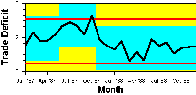
Figure 3: Plot of US Trade Deficit Data Showing Changes in Background
While the control chart barely detected any change had occurred (one point barely out), the change-point analysis detected two changes. It also provided additional details including confidence levels and confidence intervals. This example illustrates two of the benefits of a change-point analysis: it is more powerful at detecting smaller sustained changes and it better characterizes such changes. When used to analyze historical data for trends and changes, a change-point analysis provides far more useful information than a control chart. For such data, the best approach is to perform a change-point analysis. However, this does not prevent one from also control charting the data. The results of both approaches can be displayed in a simple plot like Figure 3.
Procedure for Performing a Change-Point Analysis
The procedure used by Taylor (2000a) for performing a change-point analysis iteratively uses a combination of cumulative sum charts (CUSUM) and bootstrapping to detect the changes. The analysis begins with the construction of the CUSUM chart shown in Figure 4.
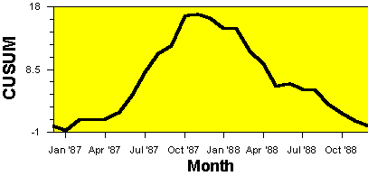
Figure 4: CUSUM Chart of US Trade Deficit Data
CUSUM charts are constructed by calculating and plotting a cumulative sum based on the data. Let X1, X2, …, X24 represent the 24 data points. From this, the cumulative sums S0, S1, …, S24 are calculated. The cumulative sums are calculated as follows:
1. First calculate the average 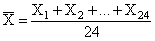
2. Start the cumulative sum at zero by setting S0 = 0.
3.
Calculate the other cumulative sums by adding the difference between
current value and the average to the previous sum, i.e., 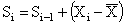 for
i = 1, 2, …, 24.
For the Trade Deficit data:
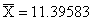
S0 = 0
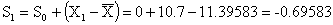
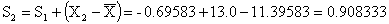

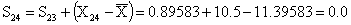
This is the series plotted in Figure 4. The cumulative sums are not the cumulative sums of the values. Instead they are the cumulative sums of differences between the values and the average. These differences sum to zero so the cumulative sum always ends at zero (S24=0).
Interpreting a CUSUM chart requires some practice. Suppose that during a period of time the values tend to be above the overall average. Most of the values added to the cumulative sum will be positive and the sum will steadily increase. A segment of the CUSUM chart with an upward slope indicates a period where the values tend to be above the overall average. Likewise a segment with a downward slope indicates a period of time where the values tend to be below the overall average. A sudden change in direction of the CUSUM indicates a sudden shift or change in the average. Periods where the CUSUM chart follows a relatively straight path indicate a period where the average did not change.
Looking at Figure 4, the CUSUM chart takes a sudden turn in direction around November 1987. This indicates that around this time, the average shifted. Before the change in direction, the CUSUM slopes upwards indicating that initially the trade deficits are above the two-year average. After the change in direction, the CUSUM slopes downwards indicating that the trade deficits are below the two-year average. After the change, the CUSUM is relatively straight indicating no subsequent change occurred. However, before the change, the CUSUM is bowed. It could be broken into two separate line segments. This gives an indication that a second change might have occurred.
The CUSUM chart in Figure 4 appears to indicate that at least one and possibly two changes took place. The problem with CUSUM charts is that they require considerable skill to properly interpret. How can we be sure that these changes took place? A confidence level can be determined for the apparent change by performing a bootstrap analysis. Before performing the bootstrap analysis, an estimator of the magnitude of the change is required. One choice, which works well regardless of the distribution and despite multiple changes, is Sdiff defined as:
Sdiff = Smax - Smin where
Smax = 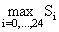
Smin = 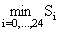
For the trade deficit data, Smin = -0.69583, Smax = 17.04583 making Sdiff = 17.74167. Once the estimator of the magnitude of the change has been selected, the bootstrap analysis can be performed. A single bootstrap is performed by:
1. Generate a bootstrap sample of 24 units, denoted X01, X02, …, X024, by randomly reordering the original 24 values. This is called sampling without replacement.
2. Based on the bootstrap sample, calculate the bootstrap CUSUM, denoted S00, S01, …, S024.
3. Calculate the maximum, minimum and difference of the bootstrap CUSUM, denoted S0max, S0min, and S0diff.
4. Determine whether the bootstrap difference S0diff is less than the original difference Sdiff.
The idea behind bootstrapping is that the bootstrap samples represent random reorderings of the data that mimic the behavior of the CUSUM if no change has occurred. By performing a large number of bootstrap samples, you can estimate how much Sdiff would vary if no change took place. You can then compare this with the Sdiff value calculated from the data is its original order to determine if this value is consistent with what you would expect if no change occurred. Figure 5 shows the CUSUM chart in Figure 4 of the data in its original order overlaid with the CUSUM charts from 5 different bootstrap samples. The bootstrap CUSUM charts tend to stay closer to zero than the CUSUM of the data in its original order. This leads one to suspect that a change must have occurred.
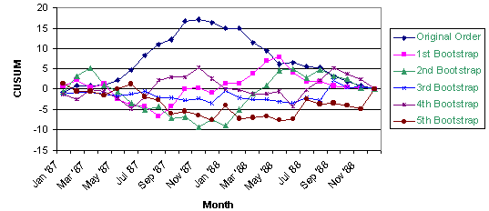
Figure 5: CUSUM Charts of Data In Original Order Plus 5 Bootstrap Samples
A bootstrap analysis consists of performing a large number of bootstraps and counting the number of bootstraps for which S0diff is less than Sdiff. Let N be the number of bootstrap samples performed and let X be the number of bootstraps for which S0diff < Sdiff. Then the confidence level that a change occurred as a percentage is calculated as follows:
Confidence Level = 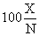 %
Typically 90%, or 95% confidence is required before one states that a significant change has been detected. For the five bootstraps shown in Figure 5, the values of S0diff are 7.0, 14.917, 7.975, 7.938 and 9.15 respectively. All of these values are below Sdiff = 17.74167. Figure 6 shows a histogram of S0diff based on 1000 bootstrap samples. Out of 1,000 bootstraps, 995 had S0diff < Sdiff. This gives a confidence level of:
Confidence Level = 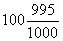 = 99.5%
This is strong evidence that a change did in fact occur.
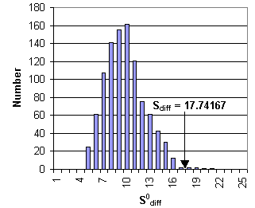
Figure 6: Histogram of S0difffor 1000 Bootstrap Samples
Ideally, rather than bootstrapping, one would like to determine the distribution of S0diff based on all possible reorderings of the data. However, this is generally not feasible. The trade deficit data consists of 24 values. The total number of possible reorderings is 24! = 6.2 1023. This is more samples than could reasonably be generated. The bootstrap analysis randomly selected 1000 of these possible reorderings and used them to estimate the distribution of S0diff. A better estimate can be obtained by increasing the number of bootstrap samples. However, 1000 bootstraps is sufficient for most purposes. Repeating the above analysis 10 times resulted in the following confidence levels: 99.6%, 99.2%, 99.3%, 99.2%, 99.4%, 99.7%, 99.2%, 99.7%, 99.5% and 99.2%. All the analysis performed in this article are based on 1,000 bootstrap samples.
Bootstrapping results in a distribution free approach with only a single assumption, that of an independent error structure. Both control charting and change-point analysis are based on the mean-shift model. Let X1, X2, ... represent the data in time order. The mean-shift model can be written as
Xi = mi + ei
where mi is the average at time i. Generally mi = mi-1 except for a small number of values of i called the change-points. ei is the random error associated with the i-th value. It is assumed that the ei are independent with means of zero. Taylor (2000b) provides a procedure for detecting a departure from this assumption. Data not appropriate for a change-point analysis and control charting include autoregressive time series data such as stock prices. Control charts also make the assumption that the ei are identically distributed. They frequently make additional assumptions as well, for example, that the ei are normally distributed.
Once a change has been detected, an estimate of when the change occurred can be made. One such estimator is the CUSUM estimator. Let m be such that:
|Sm| = 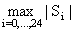
Sm is the point furthest from zero in the CUSUM chart. The point m estimates last point before the change occurred. The point m+1 estimates the first point after the change. For the trade deficit data, the most extreme point on the CUSUM chart is the November 1987 (S11). The best estimate of when the change occurred is between November 1987 and December 1987.
A second estimator of when the change occurred is the mean square error (MSE) estimator. Let MSE(m) be defined as:
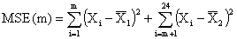
where 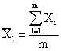 and 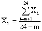
The MSE error estimator is based on the idea of splitting the data into two segments, 1 to m and m+1 to 24, estimating the average of each segment, and then seeing how well the data fits the two estimated averages. The value of m that minimizes MSE(m) is the best estimator of the last point before the change. As before, the point m+1 estimates the first point after the change. For the trade deficit data, the value of m minimizing MSE(m) is 10. The best estimate of when the change occurred is between October 1987 and November 1987. This is one month earlier than predicted by the CUSUM estimator. In Table 2, the MSE estimator was used to estimate the times of the changes and the months reported are the first months following the change, i.e., m+1.
Once a change has been detected, the data can be broken into two segments, one each side of the change-point, and the analysis repeated for each segment. For each additional significant change found, continue to split the segments in two. In this manner multiple changes can be detected. For the trade deficit data, the initial change splits the data into two segments, January 1987 through October 1987 and November 1987 through December 1988. Repeating the analysis on each segment results in the detection of a second change predicted to have occurred between May 1987 and June 1987. This changed occurred with only 91.0% confidence so is not as likely to have occurred as the first change. However, there is still strong evidence that a second change occurred. Figure 7 shows the CUSUM chart from Figure 4 with the significant changes shown in the background. It appears that the slope of the CUSUM chart changed twice. These correspond to the two changes of the background color.
While the above procedure generally works well, it can be improved. Taylor (2000a) treats the changes detected by the above procedure as a set of candidate change-points. Once this set is generated, all the change-points and their confidence levels are reestimated. A backward elimination procedure is then use to eliminate those points that no longer test significant. When a point is eliminated, the surrounding change-points are reestimated along with their significance levels. This reduces the rate of false detections.
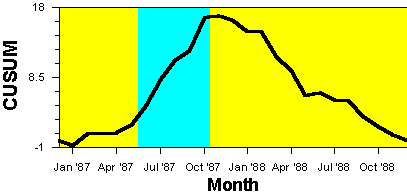
Figure 7: CUSUM Chart of US Trade Deficit Data With
Significant Changes Shown in the Background
Table 2 also gives confidence intervals for the time of the change. Methods of obtaining bootstrap confidence intervals are provided in Efron and Tibshirani (1993). Change-point analysis has a long history. The problem was originally stated in Page (1955, 1957). Hinkley (1971) and Pettitt (1980) suggest the application of CUSUM charts. Hinkley and Schechtman, (1987) suggest the application of bootstrapping. The procedure in this article combines these two approaches in a novel fashion. It also adds an iterative approach that allows multiple changes to be detected. All the above references are restricted to the problem of detecting a single change.
Detecting Changes in the Variation and Other Characteristics
The change-point analysis procedure can be applied to any characteristic for which data is collected over time. In the trade deficit example, it was applied to individual values. It can also be applied to averages, standard deviations, ranges, defect levels, counts and many other types of data. Taylor (2000b) shows how a change-point analysis can be used to detect a change in the autocorrelation structure of a set of chemical data.
For the trade deficit data we would also like to determine if the variation changed. This presents a special problem because we have only a single observation per month so we cannot calculate a range or standard deviation. In this case, it is still possible to analyze the variation by performing the change-point analysis on the differences between consecutive points. Let X1, X2, …, X24 represent the 24 data points. From this, 12 consecutive difference D1, D2, …, D12 are calculated as follows:
Di = | X2i – X2i-1 | for i=1,2,…,12
Figure 8 shows a CUSUM chart of the trade deficit variation (differences). Performing a bootstrap analysis on this chart indicates that no significant change in the trade deficit variation occurred.
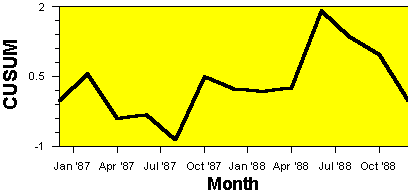
Figure 8: CUSUM Chart of US Trade Deficit Variation
It is important to only use differences that do not have points in common. For example, |X2 – X1| and |X3 – X2| have the point X2 in common and are therefore correlated. This violates the assumption of independent errors required by a change-point analysis. While the difference between consecutive points will frequently provide a good estimate of the short-term variation in the process, at least some of these differences might be contaminated by shifts or changes in the average. Such shifts can create outlier or extreme values in the data. As we will see in the next section, the change-point analysis procedure is robust to such outliers.
What if the data contains an outlier? As an example of what can happen, the June 1987 trade deficit value was changed to 25. Figure 9 shows an individuals control chart for this modified set of data with the results of the change-point analysis shown in the background. The outlier is clearly evident. The outlier creates additional variation in the data making it more difficult to detect a change. Despite this, the change-point analysis still detects the second change, which was the change with the greatest effect.
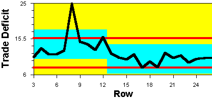
Figure 9: Individuals Chart of US Trade Deficit Data With Outlier
The change-point analysis procedure is reasonably robust to such outliers. It can be made even more robust by analyzing the ranks of the values instead of the values themselves. For the trade deficit data, there are 24 data points. The largest value is given a rank of 24, the second largest value is given a rank of 23, and the smallest value is given a rank of 1. Analyzing the ranks instead of the actual values results in a procedure that is almost unaffected by outliers. Table 3 and Figure 10 show the results of performing a change-point analysis on the ranks. The same results are obtained as before without the outlier including identical confidence levels.
Table 3: Results of Change-Point Analysis on Ranks When Data Contains Outlier
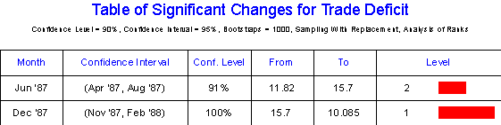
The outlier in Figure 10 falls outside the shaded region indicating it still doesn’t fit the results of the change-point analysis and should be treated as an isolated abnormal point. This example suggests that a change-point analysis should be supplemented with an individuals chart (or other control chart) to detect the presence of outliers or abnormal points. If such points exist, the change-point analysis should be performed on the ranks. When the ranks are analyzed, the change-point analysis can detect smaller sustained changes with little interference from the outliers.
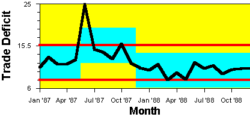
Figure 10: Plot of US Trade Deficit Data With Outlier Showing Changes
To further illustrate the benefits of a change-point analysis, two more examples will be presented. The first example involves a set of complaint data. The complaint rate had increased triggering an investigation into its cause. Figure 11 shows the number of complaints for the last eight months. Historically, the complaint rate was close to zero as in the first month. It appears that the complaint rate steadily increased over a three-month period and then gradually started to decline. A team was put together to identify what had happened over these three months to cause the increase in complaints.
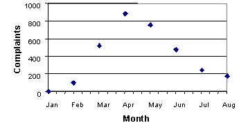
Figure 11: Plot of Number of Complaints Per Month
Complaints are recorded by lot number. There were approximately 30 lots each month. Lots 1-30 correspond to January, lots 31-60 correspond to February 2 and so on. The lots are all of similar sizes. Figure 12 shows a control chart of the number of complaints by lot number. Only an upper control limit is shown since the counts are bounded below by zero. There are 24 points above the control limit indicating a change has taken place. Did more than one change occur? One way of answering this question using controls charts is to recalculate the control limits each time a change is detected. When did the first change occur? The first point outside the control limits is lot 75 (middle of March). Is this the best guess of when the change occurred? Using a control chart to determine how many changes occurred and when each change occurred is a difficult and error-prone process.
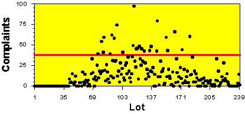
Figure 12: Control Chart of Number of Complaints Per Lot
To get a better understanding of the number and timing of the changes, a change-point analysis was performed. The results are shown in Table 4. The level 1 change occurred around lot 74 (middle of March). Previous to this a level 2 change occurred around lot 42 (middle of February). The number of complaints per lot jumps from 0 to 6.6 during the first change and then up to 27.7 following the second change. The second change is over three times the magnitude of the first change. Complaints are still being received for lots produced during the last three months. The other four changes all occur toward the end of the data set, where the complaint data is incomplete, and may be caused by the fact that complaints are still being received.
Table 4: Results of Change-Point Analysis on Complaint Data
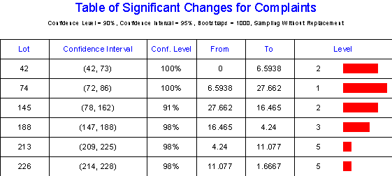
Figure 13 shows the CUSUM chart of complaints with the changes shown in the background. The first two changes represent the onset of the problem. The relative straightness of the line segments before and after these changes indicates the changes were fairly sudden.
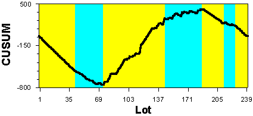
Figure 13: CUSUM of Number of Complaints
The change-point analysis has yielded several important clues. The problem, rather than developing gradually over a 3-month period, seems to be the result of two changes, the second change being the greater of the two and occurred around lot 74. The confidence interval indicates that with 95% confidence the second change occurred between lots 72 and 86. This corresponds to 2-week period of time. Further, something had occurred previous to this to cause a smaller number of complaints. Since the process has 5 lines, maybe the process change responsible for the complaint problem was piloted on one line around lot 42 (first change) and then implemented across the other 4 lines around lot 74 (second change). This led to the identification of a change in material handling that fit the clues and proved to be the cause of the problem.
This example illustrates several of the benefits of change-point analysis. First, notice how the change point analysis provided much more detailed information about the number and timing of the changes than either the monthly summary in Figure 11 or the control chart in Figure 12. Determining the exact time of the changes was key to solving the problem. Second, the change point analysis determined that the first change occurred around lot 45. This change was missed by the control chart, which didn’t have a point outside the control limits until lot 75 (second change). Change-point analysis can detect changes missed by control charts. Third, the change-point analysis is more flexible. The same analysis worked on the complaint data as the trade deficit data. However, a different type of control chart was required. An individuals control chart was used for the trade deficit data in Figure 2 while a u-chart was used in Figure 12 for the complaint data. This makes it easier to teach others to perform a change-point analysis. Finally, a change-point analysis is simpler to use when dealing with large data sets with multiple changes. Using a control chart requires calculation of new limits following each change in order to detect further changes. This is complicated by the need to estimate the time of the changes to determine what data should be used to calculate the new control limits. Change-point analysis automates this difficult process, again making it easier to train others to do the analysis. When analyzing large sets of historical data, clearly a change-point analysis is preferable to control charting.
The next example involves the online collection of data on part strength. When charting online, it is best to use a control chart. Control limits were calculated using historical data. Every hour a new sample was selected and the results immediately added to the control chart. Figure 14 shows the results of the first 25 inspections. The last point plotted falls outside the control limits. At this point the operator should begin a root cause investigation to determine the cause of the problem as well as take whatever interim actions are necessary to continue making good product. Generally, this investigation focuses on what occurred between the 24 and 25 points to cause the problem. A change-point analysis of the first 25 points might provide further insight into the problem, helping the operator to determine the root cause.

Figure 14: Control Chart of Part Strengths
Table 5 shows the results of performing a change-point analysis on the data in Figure 14. The change-point analysis indicates two changes in fact occurred. The first change occurred around point 13. The second change occurred between the points 22 and 23. This is several points before the control chart went outside the control limits.
Table 5: Results of Change-Point Analysis on Strength Data
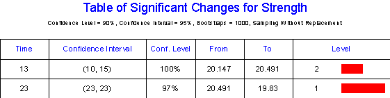
An investigation into what events occurred around points 13 and 23 determined that these two times corresponded to roll changes of the raw material. This lead to a change in the roll change procedure that improved the process stability. Figure 15 summarizes the results of the change-point analysis.
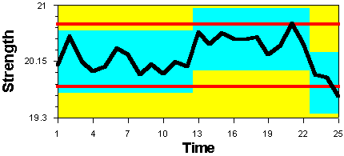
Figure 15: Plot of Part Strengths Showing Results of Change-Point Analysis
This third example illustrates how change-point analysis can complement online control charts. Change-point analysis is a powerful problem investigation tool. It can detect changes missed by the control chart and can provide better estimates as to the timing of the changes. It just might provide the extra insight that leads to the solution of a problem that would otherwise go unsolved.
Change-point analysis is not a replacement for control charting. Control charts are the preferred approach when data is collected and plotted on an hour-by-hour basis such as on a production line. In this case, a change-point analysis can be use to complement the control charts. First, a change-point analysis can be performed on the cumulated data once a week to try and detect more subtle changes missed by the control charts. Second, when a control chart detects a change or problem, a change-point analysis can be performed to better characterize the timing and nature of the change as part of the problem solving process.
When performing a one-time analysis on historical data, a change-point analysis is preferred to control charting, especially when you are dealing with large data sets. Sometimes, such analyses are triggered by an event such as an increase in complaints. This could trigger the review of the complaint history for the last 3 years to determine when the problem started. Other times such analyses are done to gain understanding. For example, a manager might decide to review accident data to determine if there are any trends. Still other times, data might be periodically reviewed to gain the big picture. Each year as part of the annual report an analysis might be performed on inventory turns to see whether there has been an improvement. When performing such analyses, a change-point analysis has numerous advantages over a control chart including:
1. It is more powerful at detecting smaller sustained changes. This is especially true when compared to an individuals control chart.
2. It better characterizes such changes including detection of multiple changes, providing associated confidence levels, and providing confidence intervals for the times of the changes.
3. It reduces the number of false detections by controlling the change-wise error rate. As a result, for each change detected there is high confidence that it is real. Control charts control the point-wise error rate and, when used with large data sets, can produce numerous false detections.
4. It is robust to outliers and can be made even more robust by performing a change-point analysis on the ranks.
5. It is more flexible. The same procedure works for all types of data including attribute data, individual values, counts, averages and standard deviations. Control charts require different types of charts for each type of data. Further, a change-point analysis can be performed on ill-behaved data like particle counts and complaint data, which do not follow any of the traditional control charting distributions and may contain numerous outliers. Only one assumption is made which can easily be tested for.
6. It is simpler to use and interpret, especially for large data sets and when multiple changes have occurred. On a control chart, a single change can cause numerous points to fall outside the control limits. Determining the number of changes and exactly when the changes occurred is still a difficult task. One way of accomplishing this with control charts is to establish new control limits following each change in order to be able to detect further changes. This is complicated by the need to estimate the time of the changes to determine what data should be used to establish new control limits. Change-point analysis automates this difficult process.
Despite its numerous advantages, change-point analysis has two shortcomings. First, it does not detect isolated abnormal points. A change-point analysis should be supplemented with a Shewhart control chart when such points are of concern. Box and Luceo (1997) demonstrate that Shewhart control charts are optimal at detecting isolated abnormal points while CUSUM charts are optimal at detecting shifts of the mean. If one is concerned with both types of changes, both procedures can be used to complement each other.
Second, the bootstrapping approach will not produce identical results each time it is performed. This is because of the random selection of the bootstrap samples. This last shortcoming is largely a matter of analysis time because increasing the number of bootstraps results in increasingly more precise results. The 1000 bootstraps used in the examples are recommended as the minimum number. For small data sets, 10,000 and even 100,000 bootstraps can be performed in a reasonable amount of time.
Change-point analysis represents a powerful new tool that complements online control charts and is preferable to control charts when analyzing historical data. However, possibly the greatest benefit of the given procedure is its flexibility and simplicity. When implemented in a software package, the user does not have to be concerned with attribute versus variables data, normality assumptions, distributions, and selecting the appropriate type of control chart. This can result in software that is easier to use than are most control charting packages. Such software could automatically verify the assumption of independent errors and check for outliers. If either was found, the software could notify the user of the problem and guide them on what to do. This would make a change-point analysis an extremely safe approach, even for a novice. Hopefully, this type of software will help make the formal analysis of time ordered data a much more common practice.
Box, George and Luceo, Alberto (1997), Statistical Control by Monitoring and Feedback Adjustment, Wiley, NewYork.
Efron, Bradley and Tibshirani, Robert (1993), An introduction to the Bootstrap, Chapman & Hall, New York.
Hinkley, D. V. (1971), “Inference about the change-point from cumulative sum tests,” Biometrika, 58 3, 509-523.
Hinkley, David and Schechtman, Edna (1987), “Conditional bootstrap methods in the mean-shift model,” Biometrika, 74 1, 85-93.
Page, E. S. (1955), “A test for a change in a parameter occurring at an unknown point,” Biometrika, 42, 523-527.
Page, E. S. (1957), “On problems in which a change in parameter occurs at an unknown point,” Biometrika, 44, 248-252.
Pettitt, A. N. (1980), “A simple cumulative sum type statistic for the change-point problem with zero-one observations,” Biometrika, 67 1, 79-84.
Taylor, Wayne (2000a), Change-Point Analyzer 2.0 shareware program, Taylor Enterprises, Libertyville, Illinois. Web: http://www.variation.com/cpa
Taylor, Wayne (2000b), “A Pattern Test for Distinguishing Between Autoregressive and Mean-Shift Data,” submitted to Journal of Quality Technologies.
Wheeler, Donald (1993), Understanding Variation – The Key to Managing Chaos, SPC Press, Knoxville, Tennessee.
Key Words: Change-Point Analysis, Control Chart, Individuals Chart, Mean-Shift Model
Citation: Taylor, Wayne A. (2000), "Change-Point Analysis: A Powerful New Tool For Detecting Changes," WEB: http://www.variation.com/cpa/tech/changepoint.html.